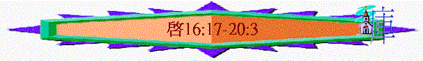

|
主 必 快 來 |
|||||
|
序 幕 |
開 始 |
中 段 |
尾 聲 |
結 局 |
結 語 |
|
簡介與意義 |
展開與前奏 |
警告與剛硬 |
刑罰與反抗 |
過去與更新 |
囑咐與回應 |
|
1-3 |
4-7 |
8-11 |
12-20 |
21:1-22:5 |
22:6-21 |
四.尾聲 è 刑罰與反抗(12-20)
4.傾盡的審判(16:1-20:3)
B.審判污穢的國度(16:17-19:10)
à烈怒的酒杯
〜17-18章主要提及巴比倫，巴比倫城不是給瑪代、波斯所毀嗎？ 為何在末世出現呢？有人指她只是一個象徵，代表末世的假宗教，有指她是天主教，另外，有人卻是指敵基督所掌管的政治與經濟，但筆者卻認為乃是實在的大城，在昔日，巴比倫地方曾出現，從遠古至將來也要迷惑普天下，是污穢靈之巢穴，叫人敬拜假神，神是忌邪之神，面對此淫亂的國度，祂要用嚴厲的第七碗臨到她身上
(詳情請參考 啟示錄中的巴比倫)
啟示錄中的巴比倫)
a.第七碗的傾倒
(1)成了的表徵
「第七位天使把碗倒在空中，就有大聲音從殿中的寶座上出來，說：「成了！」」16:17
〜到了最後七碗傾倒，從寶座上有聲音說「成了」，表示神末後的計劃已接近尾聲，可以真真正正成了，完成了！
(2)極大的災害
(A)利害的地震
「又有閃電、聲音、雷轟、大地震，自從地上有人以來，沒有這樣大、這樣利害的地震。」16:18
〜人類歷史中也未出現過
(B)極重的雹子
「各海島都逃避了，眾山也不見了。」16:20
〜雹子重100碗左右，人的反應仍是要反抗褻瀆神！
(3)大城的傾覆
「那大城裂為三段，列國的城也都倒塌了；神也想起巴比倫大城來，要把那盛自己烈怒的酒杯遞給他。」16:19
〜題及大城，指巴比倫(下文會詳細交待)也要倒塌，神要將自己烈怒的酒杯遞給她(由碗變成杯，是烈怒的杯)
b.大淫婦的描述
〜用淫婦來描述末後巴比倫的情況
(1)她的特點
(A)是大城
「拿著七碗的七位天使中，有一位前來對我說：「你到這裡來，我將坐在眾水上的大淫婦所要受的刑罰指給你看。」17:1
「你所看見的那女人就是管轄地上眾王的大城。」17:18
「又有第二位天使接著說：「叫萬民喝邪淫、大怒之酒的巴比倫大城傾倒了！傾倒了！」」14:8
〜聖經直接將此淫婦表明是大城，多次強調她是城，似乎真是一個城巿，有規模、有國勢，有百姓的大城。
(B)是淫婦
(a)名字本身顯淫亂
〜是「大淫婦」，此淫亂如按下文應是關乎邪靈、鬼魔，應是指與偶像，邪靈行屬靈淫亂。
(b)行為本身顯放蕩
「地上的君王與他行淫，住在地上的人喝醉了他淫亂的酒。」17:2
〜她與世上的君王行淫，行為也影響其它國。
可能列國因利益與她交往，從而引誘他們行惡，離棄神，隨鬼魔偶像。
(c)儀表本身顯迷惑
「他們與羔羊爭戰，羔羊必勝過他們，因為羔羊是萬主之主、萬王之王。同著羔羊的，就是蒙召、被選、有忠心的，也必得勝。」17:14
〜衣服顏色，所帶的名貴的妝飾，及手持的金杯，用人的角度，十分吸引，令人受迷惑。
(C)是巴比倫
「在他額上有名寫著說：「奧秘哉！大巴比倫，作世上的淫婦和一切可憎之物的母。」17:5
〜不只一次強調此城，此淫婦是巴比倫
〜昔日的巴比倫是寧錄所建(創10:8-11)，是假宗教的起源，也是建巴別塔的地方
〜後來巴比倫的國度興起，充滿了偶像，行邪術的人。
〜末世似乎此國度會再出現(至今仍未見到)，再迷惑普天下。
(2)她的關係
(A)與列國的關係
「拿著七碗的七位天使中，有一位前來對我說：「你到這裡來，我將坐在眾水上的大淫婦所要受的刑罰指給你看。地上的君王與他行淫，住在地上的人喝醉了他淫亂的酒。」」17:1-2
「在他額上有名寫著說：「奧秘哉！大巴比倫，作世上的淫婦和一切可憎之物的母。」17:5
「因為列國都被他邪淫大怒的酒傾倒了。地上的君王與他行淫；地上的客商因他奢華太過就發了財。」18:3
(a)與列邦進行貿易
〜大淫婦坐在「眾水上」，眾水的意思，是指多民多人多國多方。
似乎這大城將來會受多民多方擁愛，因為列邦會因他的奢華發財，會與她進行貿易，列邦也要與她交往。
(b)管轄地上眾王
「你所看見的那女人就是管轄地上眾王的大城。」17:18
〜她不單奢華，也坐在眾水上，將來地位崇高，甚至可管轄地上眾王。
(c)迷惑污穢列國
「因為列國都被他邪淫大怒的酒傾倒了。地上的君王與他行淫；地上的客商因他奢華太過就發了財。」18:3
「燈光在你中間決不能再照耀；新郎和新婦的聲音，在你中間決不能再聽見。你的客商原來是地上的尊貴人；萬國也被你的邪術迷惑了。」18:23
〜她本身是污穢，滿鬼魔，列國也被她迷惑，隨她樣式，以至也玷污自己，行神認為可憎之事。
(B)與聖徒的關係
「我又看見那女人喝醉了聖徒的血和為耶穌作見證之人的血。我看見他，就大大的希奇。」17:6
(C)與獸的關係
(a)獸的形容
「我被聖靈感動，天使帶我到曠野去，我就看見一個女人騎在朱紅色的獸上；那獸有七頭十角，遍體有褻瀆的名號。」17:3
「你所看見的獸，先前有，如今沒有，將要從無底坑裡上來，又要歸於沉淪。凡住在地上、名字從創世以來沒有記在生命冊上的，見先前有、如今沒有、以後再有的獸，就必希奇。智慧的心在此可以思想。那七頭就是女人所坐的七座山，又是七位王；五位已經傾倒了，一位還在，一位還沒有來到；他來的時候，必須暫時存留。那先前有如今沒有的獸，就是第八位；他也和那七位同列，並且歸於沉淪。你所看見的那十角就是十王；他們還沒有得國，但他們一時之間要和獸同得權柄，與王一樣。他們同心合意將自己的能力、權柄給那獸。他們與羔羊爭戰，羔羊必勝過他們，因為羔羊是萬主之主、萬王之王。同著羔羊的，就是蒙召、被選、有忠心的，也必得勝。」17:8-14
＊是先前所見的獸
〜「七頭十角」「褻瀆的名號」「見先前有的」就是約翰先前在異象中所見的獸è敵基督，但「如今沒有」還未出現，將來從無底坑上來。
＊有七頭
〜七頭是七位王，五位傾倒，一位還在，在歷史上，亞述，巴比倫，瑪代波斯，希臘，是七座山，已經傾倒了，到約翰時期，羅馬王仍在，還有一位還沒來，應是敵基督，而第八位亦是牠因牠受傷卻醫好了è詳細內容請看
敵基督是誰?
〜「女人所坐的七坐山」，從歷史看，六大帝國有她偶像，及假宗教，而偶像，假宗教的來源正是從巴比倫那女人而出。
＊有十角
〜就是將來十王，他們甘心將權柄給那獸。
＊至終失敗
〜十王與獸與羔羊爭獸，至終失敗，獸終歸於沉淪。
(b)與獸關係
＊互相倚靠
〜初時淫婦是騎在獸上，似乎關係十分密切，淫婦也要靠獸行迷惑淫亂的事。
＊至終反目
「你所看見的那十角與獸必恨這淫婦，使他冷落赤身，又要吃他的肉，用火將他燒盡。因為神使諸王同心合意，遵行他的旨意，把自己的國給那獸，直等到神的話都應驗了。」17:16-17
〜神使獸與諸王恨這淫婦，使他冷落。
(D)與鬼魔的關係
「他大聲喊著說：巴比倫大城傾倒了！傾倒了！成了鬼魔的住處和各樣污穢之靈的巢穴（或作：牢獄；下同），並各樣污穢可憎之雀鳥的巢穴。」18:2
〜「鬼魔」「污穢之靈」「可憎之雀鳥」同樣表達邪靈，牠們的巢穴在巴比倫大城，聚集數目不少(是各樣的污穢之靈)。
〜這淫婦可算是可憎之物的母，是偶像、邪靈的源頭，安居之所。
(3)她的惡行
「因他的罪惡滔天；他的不義神已經想起來了。」18:5
(A)淫亂
「因為列國都被他邪淫大怒的酒傾倒了。地上的君王與他行淫；地上的客商因他奢華太過就發了財。」18:3
(B)驕傲
「他怎樣榮耀自己，怎樣奢華，也當叫他照樣痛苦悲哀，因他心裡說：我坐了皇后的位，並不是寡婦，決不至於悲哀。」18:7
(C)殺人
「先知和聖徒，並地上一切被殺之人的血，都在這城裡看見了。」18:24
C.巴比倫的受刑
(1)一下子的災殃
「所以在一天之內，他的災殃要一齊來到，就是死亡、悲哀、饑荒。他又要被火燒盡了，因為審判他的主神大有能力。地上的君王，素來與他行淫、一同奢華的，看見燒他的煙，就必為他哭泣哀號。」18:8-9
〜昔日巴比倫王伯沙撒可以在一晚之間被殺，被瑪代所取替，將來的巴比倫亦會，一日之間，災殃一齊臨到。
〜地上的君王也為她哀哭
(2)瞬息間的失去
(A)失去貿易
「地上的客商也都為他哭泣悲哀，因為沒有人再買他們的貨物了。」18:11
〜地上商客也為她哭泣，因沒有人再買他們的貨物了。
(B)失去財富
「販賣這些貨物、藉著他發了財的客商，因怕他的痛苦，就遠遠的站著哭泣悲哀，說：哀哉！哀哉！這大城啊，素常穿著細麻、紫色、朱紅色的衣服，又用金子、寶石，和珍珠為妝飾。一時之間，這麼大的富厚就歸於無有了。凡船主和坐船往各處去的，並眾水手，連所有靠海為業的，都遠遠的站著。」18:15-17
〜商客也為她哀嘆，一時之間，那麼大的富厚歸於無有。
(C)失去繁華
「他們又把塵土撒在頭上，哭泣悲哀，喊著說：哀哉！哀哉！這大城啊。凡有船在海中的，都因他的珍寶成了富足！他在一時之間就成了荒場！」18:19
(D)失去歡樂
「彈琴、作樂、吹笛、吹號的聲音，在你中間決不能再聽見；各行手藝人在你中間決不能再遇見；推磨的聲音在你中間決不能再聽見；燈光在你中間決不能再照耀；新郎和新婦的聲音，在你中間決不能再聽見。你的客商原來」18:22-23
〜琴聲，作樂聲，新郎和新婦，歡樂的聲音也失去了。
d.天上的大讚美(19:1-10)
(A)頌讚父神的公義
「此後，我聽見好像群眾在天上大聲說：哈利路亞（就是要讚美耶和華的意思）！救恩、榮耀、權能都屬乎我們的神！他的判斷是真實公義的；因他判斷了那用淫行敗壞世界的大淫婦，並且向淫婦討流僕人血的罪，給他們伸冤。又說：哈利路亞！燒淫婦的煙往上冒，直到永永遠遠。那二十四位長老與四活物就俯伏敬拜坐寶座的神，說：阿們！哈利路亞！」19:1-4
〜當巴比倫受審判時，天上有讚美耶和華(哈利路亞)的聲音，讚美神的公義、判斷何其真實。
〜從古至將來，這淫婦不知敗壞幾多人，離棄神流了多少人的血，將來受審，更顯出神的公義。
(B)讚美我主的作王
「我聽見好像群眾的聲音，眾水的聲音，大雷的聲音，說：哈利路亞！因為主我們的神、全能者作王了。」19:6
〜七碗的聲聲，就是另一個高潮，歷世歷代信徒的渴慕----主要在地王了！
(C)歡呼羔羊的婚筵
「我們要歡喜快樂，將榮耀歸給他。因為，羔羊婚娶的時候到了；新婦也自己預備好了，就蒙恩得穿光明潔白的細麻衣。（這細麻衣就是聖徒所行的義。）天使吩咐我說：「你要寫上：凡被請赴羔羊之婚筵的有福了！」又對我說：「這是神真實的話。」」19:7-9
〜「羔羊」是指基督，「新婦」因不是指以色列聖徒，因以列色在舊約中已是神的妻子(曾被休，後得挽回)，一早已有約(耶3:14-20)，而弗5:23-32，林後11:2-3講給我們一個很大的奧秘。教會如同童女獻給基督，我們是新婦，等候良人來臨。
〜在猶太文化裏，一對夫婦在未結婚前已訂婚，訂婚等同有夫妻名份，在婚娶時候，新郎到新娘家迎娶新婦，然後一直遊行返到新郎家，在新郎家擺設筵席。
〜教會一樣，已許配給基督，在災難前，己被提，主迎娶了教會，而到七碗後，婚筵開始，主與教會聯合，眾天使，眾聖徒也因此而歡呼。
〜而教會信徒也因主的血而得穿白衣迎見主。
〜婚筵後，主與信徒一同回到地上，一同作王，享受美好的福份。
C.審判敵神的群體(19:11-20:3)à餘下的酒醡
〜到最後階段，也是另一高峰，主再返來，刑罰一切仇敵，踹全能神烈怒的酒酢。
a.基督的來臨
(1)祂的座騎
「我觀看，見天開了。有一匹白馬，騎在馬上的稱為誠信真實，他審判，爭戰，都按著公義。」19:11
〜昔日主在地上騎驢駒子入耶路撒冷，代表祂的順服、謙和，將來祂要騎白馬，用君王得勝者來到世間。
(2)祂的名稱
「他穿著濺了血的衣服；他的名稱為神之道。」19:13
〜一個審判者，需要誠信，真實，沒假，沒歪，說話有權柄，判語有果效。
〜基督完全可以做得到，祂稱為「誠信」「真實」又為「神之道」，所說的話沒有一句不帶能力！
(3)祂的眼目
「他的眼睛如火焰，他頭上戴著許多冠冕；又有寫著的名字，除了他自己沒有人知道。」19:12
〜如火焰，能察驗人的罪
(4)祂的頭飾
「聖靈向眾教會所說的話，凡有耳的，就應當聽！得勝的，我必將那隱藏的嗎哪賜給他，並賜他一塊白石，石上寫著新名；除了那領受的以外，沒有人能認識。」2:17
〜有許多冠冕，寫著的名字，除祂以外，沒人認識，可能代表一些屬祂的人，有新名字，是主所認識的，而祂們將得冠冕，所以主頭上有許多冠冕，等著賞賜人。
(5)祂的衣服
「他穿著濺了血的衣服；他的名稱為神之道。」19:13
「在他衣服和大腿上有名寫著說：「萬王之王，萬主之主。」」19:16
〜「濺了血」代表祂行審判，會沾染很多人的血。
〜衣服和大腿上，寫著萬王之王，萬主之主，祂才配稱此名號，魔鬼，敵基督也不能。
(6)祂的隨從
「在天上的眾軍騎著白馬，穿著細麻衣，又白又潔，跟隨他。」19:14
(7)祂的工具
「有利劍從他口中出來，可以擊殺列國。他必用鐵杖轄管（轄管：原文作牧）他們，並要踹全能神烈怒的酒醡。」19:15
〜用劍，用鐵杖審判轄管世界。
b.飛鳥的赴筵
「我又看見一位天使站在日頭中，向天空所飛的鳥大聲喊著說：「你們聚集來赴神的大筵席，可以吃君王與將軍的肉，壯士與馬和騎馬者的肉，並一切自主的為奴的，以及大小人民的肉。」」19:17-18
〜天使邀請飛鳥赴筵，此筵的食物是人的肉，人的屍體，代表主回來時，很多人會被殺。
c.寧死的頑抗
「我看見那獸和地上的君王，並他們的眾軍都聚集，要與騎白馬的並他的軍兵爭戰。」19:19
〜之前第六碗，爭戰的道路，軍隊已預備，到主回來時，他們聯合一齊，嘗試與主及天軍爭戰。
d.仇敵的被滅
「那獸被擒拿；那在獸面前曾行奇事、迷惑受獸印記和拜獸像之人的假先知，也與獸同被擒拿。他們兩個就活活的被扔在燒著硫磺的火湖裡；其餘的被騎白馬者口中出來的劍殺了；飛鳥都吃飽了他們的肉。」19:20-21
〜敵基督與假先知會活活被扔在火湖裏，其餘的跟從者會被騎馬者口中出來的劍擊殺！
e.魔鬼的被捆
「我又看見一位天使從天降下，手裡拿著無底坑的鑰匙和一條大鍊子。他捉住那龍，就是古蛇，又叫魔鬼，也叫撒但，把他捆綁一千年，扔在無底坑裡，將無底坑關閉，用印封上，使他不得再迷惑列國。等到那一千年完了，以後必須暫時釋放他。」20:1-3
〜魔鬼撒但會被捉住，在無底坑中被捆一樣，一千年後要釋放牠！魔鬼撒但會被捉住，在無底坑中被捆一樣，一千年後要釋放牠！